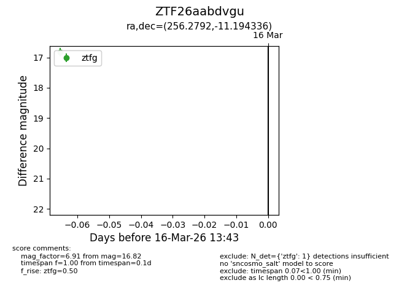
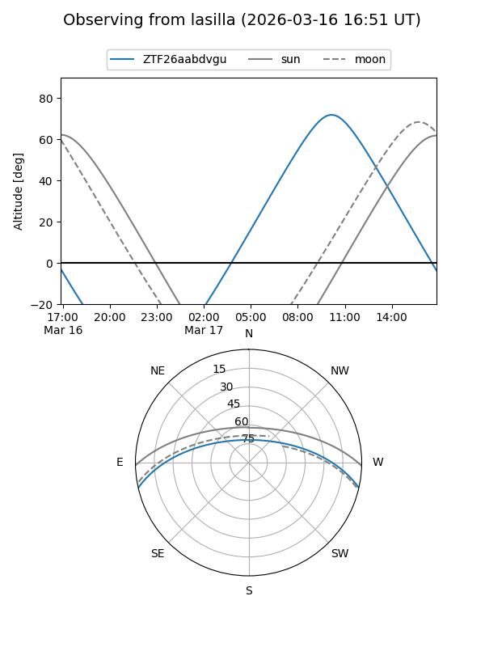
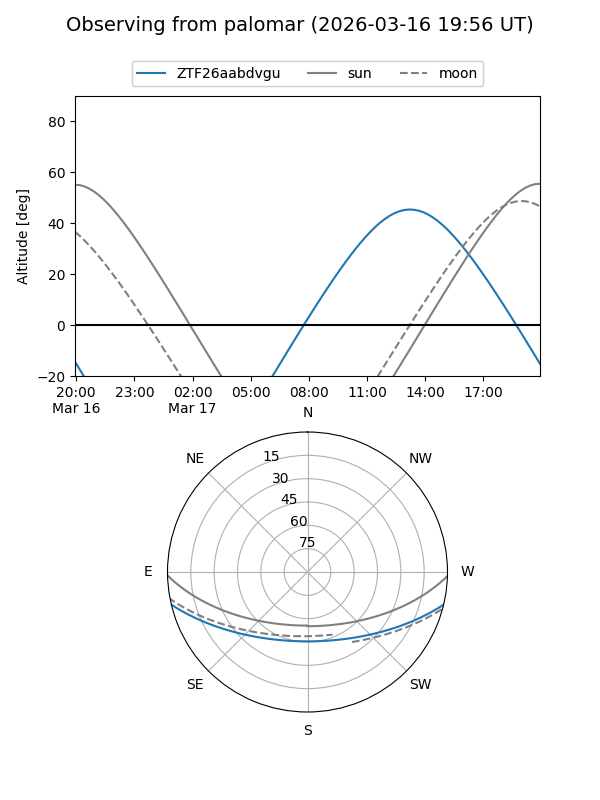

ZTF26aabdvgu
Target ZTF26aabdvgu at 2026-03-16 13:45
Aliases and brokers:
FINK: link
Lasair: link
ALeRCE: link
alt names
ZTF26aabdvgu (ztf,fink_ztf)
Coordinates:
equatorial (ra, dec) = 256.2792,-11.19434
equatorial (HMS+DMS) = 17:05:07.00,-11:11:39.61
galactic (l, b) = (9.9020,+17.58539)
Flags:
Photometry:
last ztfg=16.82
1 ztfg detections
Lightcurve

Visibility


Additional plots